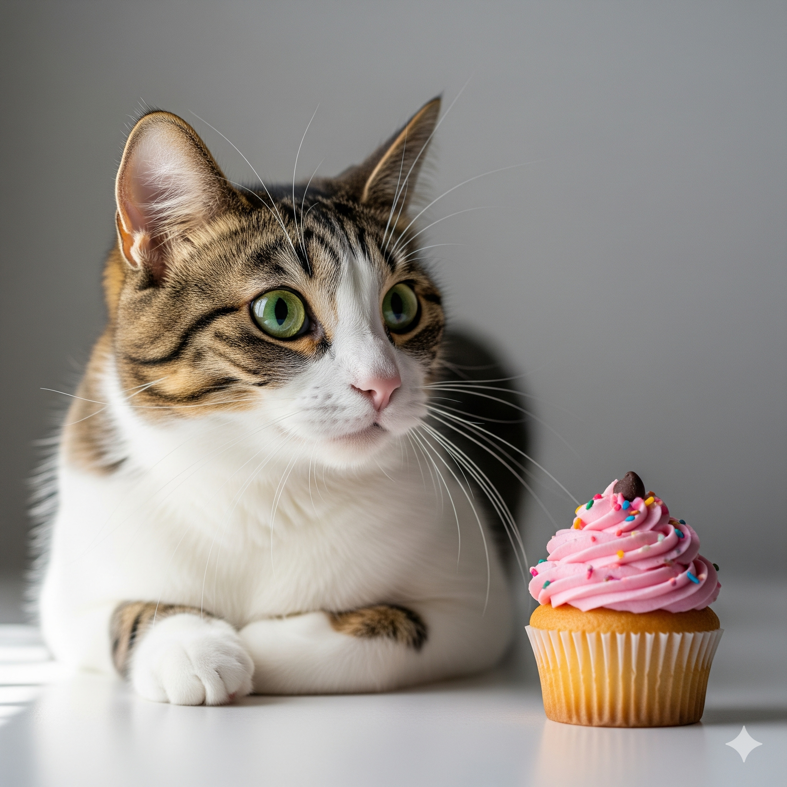

Por que os gatos não sentem o sabor doce — e por que isso importa mais do que você imagina

Por Plantas & Gatos - Seu guia de confiança sobre cuidados e comportamento felino
Você já percebeu que o seu gato nunca se interessa por um pedaço de bolo ou um brigadeiro? 🍫😺 Não é apenas uma questão de “gosto”: os felinos não conseguem sentir o sabor doce. E existe uma fascinante ciência por trás desse comportamento tão peculiar, que revela segredos evolutivos únicos do mundo felino.
🧬 A genética por trás do paladar felino: uma descoberta revolucionária
A descoberta de que os gatos não podem perceber o sabor doce foi resultado de uma pesquisa groundbreaking publicada na revista PLoS Genetics em 2005. Os cientistas Xia Li, Weihua Li e outros pesquisadores da Monell Chemical Senses Center descobriram que os gatos domésticos possuem uma mutação no gene Tas1r2, que codifica o receptor T1R2.
Nos mamíferos, o sabor doce é detectado por um receptor composto por duas proteínas: T1R2 e T1R3. Quando essas proteínas se unem, formam um receptor funcional que identifica moléculas de açúcar. Nos gatos, porém, o gene Tas1r2 possui uma deleção de 247 pares de bases, tornando impossível a produção da proteína T1R2 funcional. É como se o “sensor” para o açúcar simplesmente não existisse — porque literalmente não existe!
O que isso significa na prática?
Quando você oferece açúcar a um gato, seu cérebro não registra nenhuma sensação relacionada ao doce. Para eles, açúcar tem o mesmo “sabor” que água destilada. Estudos comportamentais confirmaram isso: gatos não mostram preferência entre água pura e soluções açucaradas, algo impensável para praticamente qualquer outro mamífero.
🦁 Um traço herdado dos ancestrais: a evolução explica tudo
A dieta ancestral dos felinos
Esse detalhe genético faz perfeito sentido quando analisamos a evolução dos gatos. Como carnívoros obrigatórios, os ancestrais dos felinos domésticos sempre dependeram exclusivamente de proteínas e gorduras vindas da caça. Estudos arqueológicos mostram que há mais de 10 milhões de anos, os felídeos já apresentavam adaptações anatômicas para uma dieta baseada inteiramente em carne.
Por que perder o sabor doce foi vantajoso?
Na natureza, manter sistemas sensoriais desnecessários representa um gasto energético. O princípio evolutivo “use ou perca” (use it or lose it) explica por que os gatos perderam essa capacidade: não havia pressão seletiva para mantê-la. Enquanto outros mamíferos se beneficiaram de detectar carboidratos em frutas e vegetais, os felinos aperfeiçoaram sentidos voltados para:
- Detecção de aminoácidos: gatos são especialmente sensíveis ao sabor umami e a aminoácidos presentes na carne
- Olfato apurado: possuem entre 45-80 milhões de receptores olfativos (comparado aos 5 milhões dos humanos)
- Visão noturna: adaptada para a caça em baixa luminosidade
Outros felinos também não sentem doce?
Pesquisas posteriores revelaram que todos os felídeos compartilham essa característica. Lions, tigres, leopardos, pumas — nenhum deles consegue perceber o sabor doce. Um estudo de 2006 testou DNA de 12 espécies diferentes de felinos e encontrou a mesma mutação em todas elas, confirmando que essa característica surgiu antes da diversificação da família Felidae.
🔬 Comparação com outros carnívoros: gatos são únicos
É importante notar que nem todos os carnívoros perderam a capacidade de sentir doce. Cães, por exemplo, mantiveram receptores funcionais para sabores doces, o que explica por que muitos cachorros têm interesse em frutas e doces (embora muitos ainda sejam perigosos para eles).
Outros carnívoros como furões e alguns pinípedes (focas e leões-marinhos) também apresentam mutações similares, mas os gatos domésticos representam o caso mais estudado e bem documentado dessa adaptação evolutiva.
🍯 Exceções interessantes: quando gatos “gostam” de doce
Embora não sintam o sabor doce, alguns gatos podem demonstrar interesse por determinados alimentos açucarados. Isso geralmente acontece devido a:
- Outros sabores presentes: gordura, proteínas ou sal no alimento
- Textura atrativa: cremosidade ou temperatura
- Condicionamento: associação com experiências positivas
- Aromas: compostos voláteis que estimulam o olfato
🚫 Quando o doce pode ser perigoso: uma questão de vida ou morte
Mesmo que seu gato não “perceba” o açúcar, isso definitivamente não significa que todo doce seja inofensivo. Pelo contrário: a falta de percepção pode tornar alguns ingredientes ainda mais perigosos, pois o gato não desenvolve aversão natural a substâncias que podem prejudicá-lo.
Chocolate: o vilão número um
O chocolate contém teobromina e cafeína, substâncias da família das metilxantinas que são tóxicas para gatos. Enquanto humanos metabolizam essas substâncias rapidamente, os gatos as processam muito lentamente, permitindo acúmulo tóxico. Os sintomas incluem:
- Vômitos e diarreia (primeiros sinais)
- Taquicardia e arritmias cardíacas
- Tremores e hiperatividade
- Convulsões e, em casos graves, morte
Chocolates mais escuros são mais perigosos: chocolate amargo pode conter até 450mg de teobromina por 30g, enquanto ao leite contém cerca de 60mg na mesma quantidade.
Xilitol: o adoçante assassino silencioso
O xilitol, presente em balas, chicletes e produtos “diet”, é extremamente perigoso. Em gatos, provoca:
- Liberação massiva de insulina
- Hipoglicemia severa em 30–60 minutos
- Fraqueza, vômitos e perda de coordenação
- Dano hepático e, potencialmente, morte
Outros perigos escondidos
- Massa crua: contém fermento que pode continuar fermentando no estômago
- Frutas com caroço: pêssegos, cerejas e damascos contêm cianeto
- Uvas e passas: podem causar insuficiência renal (mecanismo ainda não totalmente compreendido)
- Laticínios: a maioria dos gatos adultos é intolerante à lactose
🧪 Pesquisas recentes e descobertas fascinantes
Novos estudos sobre paladar felino
Pesquisas de 2020–2023 revelaram informações ainda mais interessantes sobre o paladar dos gatos:
- Receptores especiais para aminoácidos: gatos possuem receptores únicos para detectar taurina, um aminoácido essencial presente na carne
- Preferência por temperaturas: estudos mostram que gatos preferem alimentos a temperatura corporal (37–38°C)
- Influência da textura: a textura pode ser mais importante que o sabor na escolha alimentar
Implicações para a indústria pet
Essas descobertas revolucionaram o desenvolvimento de alimentos para gatos. Fabricantes agora focam em:
- Intensificar aromas em vez de sabores doces
- Adicionar aminoácidos específicos
- Desenvolver texturas mais atrativas
- Usar gorduras naturais para palatabilidade
🐾 Como oferecer recompensas seguras e saborosas
Petiscos naturais recomendados
- Frango ou peixe cozidos (sem temperos, ossos ou pele)
- Pequenos pedaços de fígado (ocasionalmente)
- Petiscos comerciais específicos para gatos
- Erva-dos-gatos (catnip) como agrado especial
Receitas caseiras seguras
- Cubos de caldo de frango sem sal, congelados
- Pequenas porções de atum em água (ocasionalmente)
- Fatias finas de peru cozido
🌡️ Sinais de intoxicação: quando buscar ajuda veterinária
Se seu gato consumiu algo potencialmente tóxico, observe estes sinais:
- Imediatos (0–2 horas): vômitos, salivação excessiva, agitação
- Tardios (2–24 horas): letargia, dificuldade para respirar, convulsões
- Em caso de suspeita: procure ajuda veterinária imediatamente, mesmo sem sintomas
💡 Conclusão: respeitando a biologia única dos felinos
O fato de os gatos não sentirem o sabor doce é muito mais que uma curiosidade — é uma janela para compreender milhões de anos de evolução e adaptação. Essa característica única nos lembra que nossos companheiros felinos têm necessidades biológicas fundamentalmente diferentes das nossas.
Compreender essas diferenças não apenas nos ajuda a cuidar melhor de nossos gatos, mas também nos conecta com a fascinante história evolutiva que moldou esses predadores extraordinários que escolheram viver ao nosso lado.
Antes de dividir qualquer alimento com seu amigo peludo, sempre verifique se é adequado e seguro para felinos. Assim, você garante um lar cheio de carinho, saúde e longe dos perigos escondidos nas nossas guloseimas cotidianas. Afinal, o melhor presente que podemos dar aos nossos gatos é respeitar sua natureza única e manter sua saúde em primeiro lugar! 🐱💚
Fontes principais: Li et al. (2005) PLoS Genetics; Brand et al. (2006) BMC Genetics; Jiang et al. (2012) Proceedings of the National Academy of Sciences; McGrane et al. (2019) Journal of Animal Science; Diversos estudos veterinários e de comportamento animal.
← Voltar para o blog